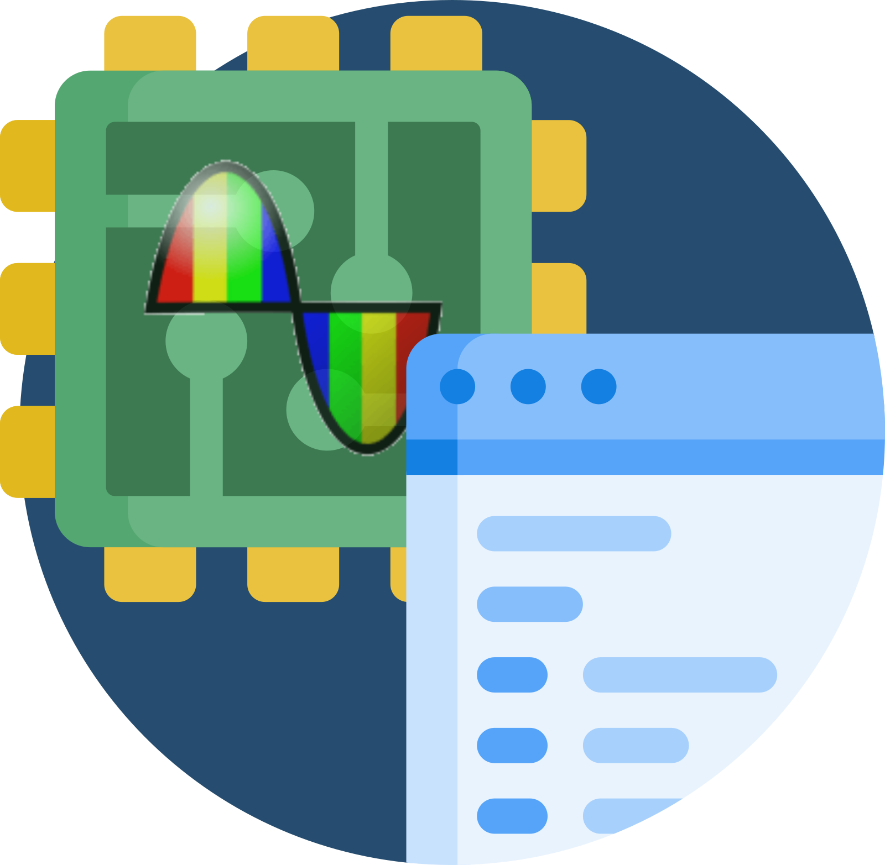

Pycotech Documentation
📑 Welcome to Pycotech!
MAIN DOCS
Documentation
Modules
pycotech package
TUTORIALS
Basic Usage
repository
open issue
Index
A
|
B
|
C
|
D
|
F
|
G
|
I
|
M
|
O
|
P
|
R
|
S
|
T
|
W
A
active_channel_count() (pycotech.loggers.PT104 property)
B
build_pico_stream() (in module pycotech.utils)
C
CHANNEL_1 (pycotech.loggers.Channels attribute)
CHANNEL_2 (pycotech.loggers.Channels attribute)
CHANNEL_3 (pycotech.loggers.Channels attribute)
CHANNEL_4 (pycotech.loggers.Channels attribute)
CHANNEL_5 (pycotech.loggers.Channels attribute)
CHANNEL_6 (pycotech.loggers.Channels attribute)
CHANNEL_7 (pycotech.loggers.Channels attribute)
CHANNEL_8 (pycotech.loggers.Channels attribute)
channel_x() (in module pycotech.loggers)
Channels (class in pycotech.loggers)
CommunicationType (class in pycotech.loggers)
connect() (pycotech.loggers.PT104 method)
CT_ALL (pycotech.loggers.CommunicationType attribute)
CT_ETHERNET (pycotech.loggers.CommunicationType attribute)
CT_USB (pycotech.loggers.CommunicationType attribute)
CtypesEnum (class in pycotech.loggers)
D
DataTypes (class in pycotech.loggers)
DIFFERENTIAL_TO_115MV (pycotech.loggers.DataTypes attribute)
DIFFERENTIAL_TO_2500MV (pycotech.loggers.DataTypes attribute)
disconnect() (pycotech.loggers.PT104 method)
discover_devices() (pycotech.loggers.PT104 static method)
F
fetch_metadata() (in module pycotech.utils)
from_param() (pycotech.loggers.CtypesEnum class method)
from_pico_stream() (in module pycotech.utils)
G
get_unit_info() (pycotech.loggers.PT104 property)
get_value() (pycotech.loggers.PT104 method)
get_value_channel_1() (pycotech.loggers.PT104 property)
get_value_channel_2() (pycotech.loggers.PT104 property)
get_value_channel_3() (pycotech.loggers.PT104 property)
get_value_channel_4() (pycotech.loggers.PT104 property)
I
is_connected() (pycotech.loggers.PT104 property)
M
map_channels() (in module pycotech.utils)
MAX_CHANNELS (pycotech.loggers.Channels attribute)
MAX_WIRES (pycotech.loggers.Wires attribute)
MIN_WIRES (pycotech.loggers.Wires attribute)
module
pycotech
pycotech.loggers
pycotech.utils
O
OFF (pycotech.loggers.DataTypes attribute)
P
PICO_BATCH_AND_SERIAL (pycotech.loggers.PicoInfo attribute)
PICO_CAL_DATE (pycotech.loggers.PicoInfo attribute)
PICO_DRIVER_VERSION (pycotech.loggers.PicoInfo attribute)
PICO_HARDWARE_VERSION (pycotech.loggers.PicoInfo attribute)
PICO_KERNEL_DRIVER_VERSION (pycotech.loggers.PicoInfo attribute)
PICO_USB_VERSION (pycotech.loggers.PicoInfo attribute)
PICO_VARIANT_INFO (pycotech.loggers.PicoInfo attribute)
PicoInfo (class in pycotech.loggers)
PT100 (pycotech.loggers.DataTypes attribute)
PT1000 (pycotech.loggers.DataTypes attribute)
PT104 (class in pycotech.loggers)
pycotech
module
pycotech.loggers
module
pycotech.utils
module
R
read_pico_txt() (in module pycotech.utils)
read_plw() (in module pycotech.utils)
RESISTANCE_TO_10K (pycotech.loggers.DataTypes attribute)
RESISTANCE_TO_375R (pycotech.loggers.DataTypes attribute)
S
save_metadata() (in module pycotech.utils)
scale_value() (pycotech.loggers.PT104 method)
set_channel() (pycotech.loggers.PT104 method)
set_channels() (pycotech.loggers.PT104 method)
set_mains() (pycotech.loggers.PT104 method)
show_plot() (in module pycotech.utils)
SINGLE_ENDED_TO_115MV (pycotech.loggers.DataTypes attribute)
SINGLE_ENDED_TO_2500MV (pycotech.loggers.DataTypes attribute)
T
to_pico_stream() (in module pycotech.utils)
to_pico_txt() (in module pycotech.utils)
W
Wires (class in pycotech.loggers)
WIRES_2 (pycotech.loggers.Wires attribute)
WIRES_3 (pycotech.loggers.Wires attribute)
WIRES_4 (pycotech.loggers.Wires attribute)